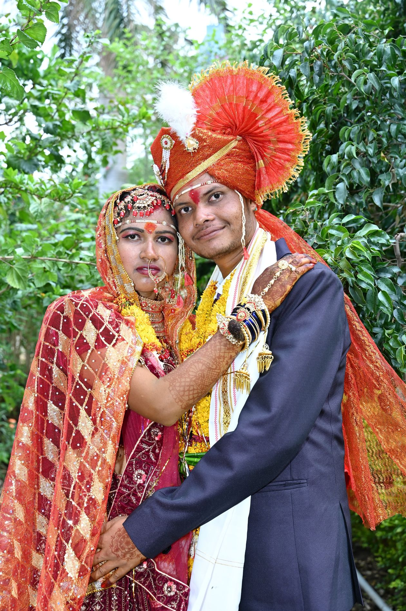
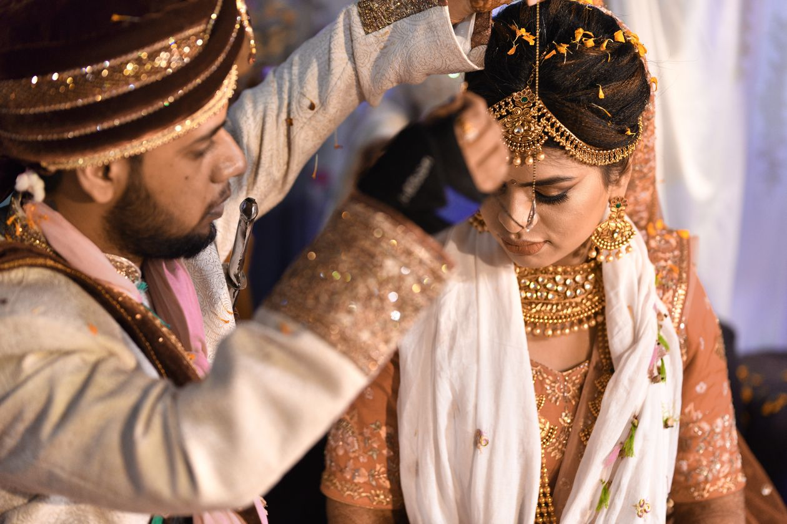

A portfolio of single frames proves a photographer can get lucky. A whole wedding — brief, decisions, outcome, and the delivery line kept or missed — proves they can be trusted with three days that will not repeat. All three couples are fictional, as the footer explains; the working method in each story is the real one.
Sara & Joseph — the small one, done slowly
ALIBAUG · ONE DAY · 60 GUESTS
A beach-house wedding with sixty guests, two faiths in one ceremony, and a couple who asked for “fewer photographs of more things that mattered.”
The brief
Sara and Joseph booked the Ek — One Day package and were specific: no staged couple shoot eating the evening, family groups kept to fourteen, and the ceremony — a combined service led by both families — covered without anyone being asked to repeat a moment for the camera. Sixty guests meant the day could be covered by one photographer without gaps, and they chose to keep it that way rather than add a second.
Decisions
The getting-ready block was split between two rooms in the same house — Sara upstairs, Joseph below — so one photographer could work both in the printed two hours. The family list was agreed at the run-sheet call and printed at fourteen groups; it took fifty of the ninety minutes. The couple session was not booked as a separate block: instead, twelve minutes at dusk on the beach, inside the reception block, while guests were at dinner. Nothing in the day was moved for photography except those twelve minutes.
Outcome
640 edited photographs — inside the printed 520–690 range for the shape — delivered in the fourth week, as promised. The couple's album order followed two months later: the 40-page book, plus a parent's copy for each side.

Reference photograph — by Ankush Chaure via Pexels. Not Sara and Joseph; no photograph on this site shows a named couple.
Event blocks
4
Coverage hours
11.5 h
Photographers
1
Frames delivered
640
Film
Not booked
Delivery
4 of 4 wks
“Sixty people, and he seemed to know all of them by the reception. My father cried twice during the ceremony; both times are in the gallery, and neither time did we see a camera.”
Priya & Rohan — six hundred guests, two photographers, one sheet
UDAIPUR · THREE DAYS · 600 GUESTS
A palace-hotel wedding across three days, where the photography problem was not light or ritual — it was geography. Two venues, two families getting ready in different wings, and a baraat that moved.
The brief
The Teen — Three Days package with a second photographer on all three days and film. The families' one hard requirement: both getting-ready rooms covered on the wedding morning, and the baraat photographed as it moved — not waited for at the gate. With 600 guests, the family list ran to the 20-group cap and needed a wrangler from each side.
Decisions
The second photographer and I split by geography, not by seniority: she took Rohan's wing and rode the baraat route backwards, shooting it as it approached; I held Priya's wing and the mandap. We worked from one printed run-sheet with radio check-ins at each block change — the sheet, not memory, held the day. For the ceremony, positions were fixed in advance with the family's priest, who walked the mandap with us the evening before and told us where we could and could not stand. That ten-minute conversation is why the pheras set is complete.
Outcome
1,410 edited photographs (printed range for the shape: 1,080–1,440), a highlight film of 5 minutes 48 seconds, gallery delivered in week 6 of 6. The couple session on day two — shot at the lake steps at 6:40 in the morning, before the heat — is the set the family printed for the house.

Reference photograph — a ceremony ritual close-up, by Rani Sahu via Pexels. Shown for the mandap's closeness; it is not Priya and Rohan's ceremony.
Event blocks
9
Coverage hours
24 h
Photographers
2
Frames delivered
1,410
Film
5 min 48 s
Delivery
6 of 6 wks
“Six hundred guests and two venues, and the photographs still feel like one wedding — because, as Arjun kept saying, there was one sheet. The morning lake portraits alone were worth the booking.”
Meera & Aditya — the day the schedule slipped
HYDERABAD · TWO DAYS · DELIVERED LATE, SAID SO
The wedding where almost nothing ran to time — and the delivery that missed its promise by a week. Both are told here because a portfolio that only shows the good days is advertising, not evidence.
The brief
The Do — Two Days package: haldi, mehndi and sangeet on day one; the wedding day on day two, at a farmhouse venue outside Hyderabad, in the last week of the monsoon.
What actually happened
Day two started two and a half hours late. Rain held the baraat at the hotel, hair and makeup overran, and by the time the ceremony began, the portrait block's light was gone. The run-sheet was rebuilt on a phone call at 4 p.m.: the family groups moved into the reception's first hour, shot in printed list order in the hall's window light while guests were seated for dinner; the couple's portraits were taken in the covered veranda during a break in the rain — twelve minutes, flashless, and better than the garden plan they replaced. The vidaai, scheduled for 9 p.m., happened at midnight. I stayed; the extra hours were agreed with the family on the spot at the printed rate, and itemised on the invoice — not absorbed, not sprung on them later.
Outcome — including the miss
940 edited photographs, inside the printed 900–1,200 range. But the gallery was delivered in week 6 against a 5-week promise — one week late. The reason: at the couple's written request, the ceremony set was re-graded warmer after they saw the previews, and re-grading 300 frames properly took the week. They agreed the trade in writing before I started, and the revised date was met — but the original promise was missed, and it is recorded here as missed, not quietly re-dated.
Reference photograph — a haldi ceremony, by killer ayush via Pexels. Day one of this wedding ran to time; it was day two that didn't.
Event blocks
7
Coverage hours
20 h
Photographers
1 + assistant
Frames delivered
940
Film
Not booked
Delivery
6 of 5 wks — late
“Our wedding ran two and a half hours late and rained. The gallery doesn't show a wedding in trouble — it shows the wedding we remember. The re-grade took an extra week and he told us before he started, not after he finished.”
Your wedding gets the same sheet.
Plan it on the home page, then check the date. Fourteen weddings a year — the cap is why the stories above end the way they do.